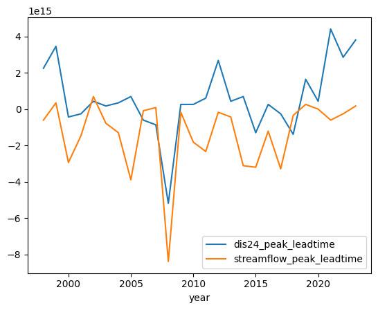
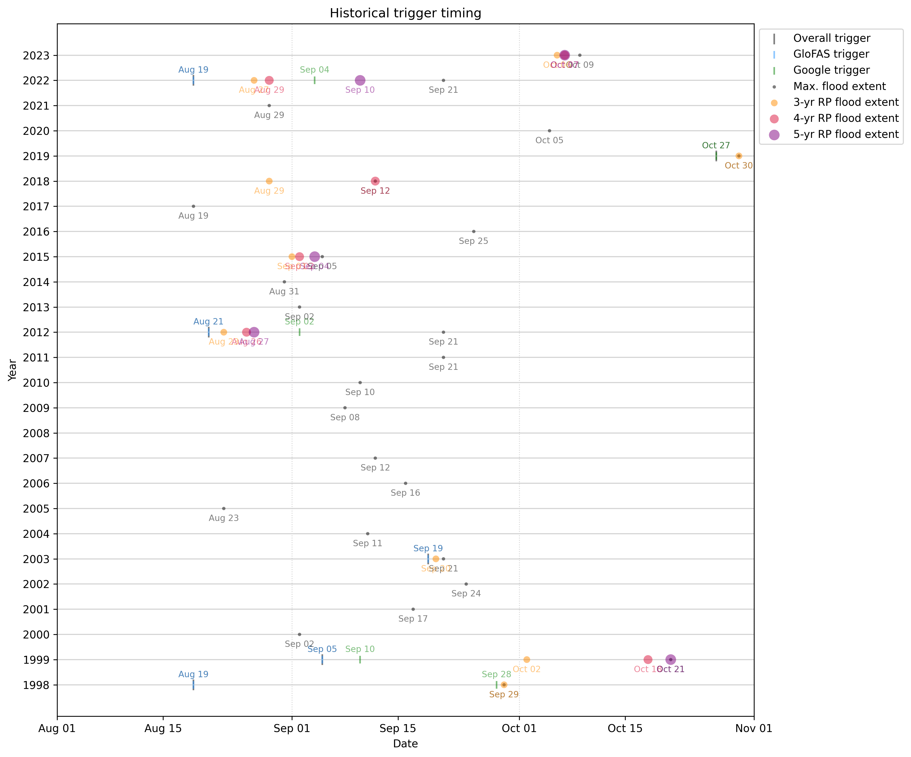

Code
%load_ext jupyter_black
%load_ext autoreload
%autoreload 2Determine best balance of Google and GloFAS forecasts to maximize accuracy and leadtime.
For simplicity, just doing now with reanalysis. Later notebooks use the reanalysis-based thresholds and see how many leadtimes we can add before the accuracy drops off.
%load_ext jupyter_black
%load_ext autoreload
%autoreload 2import ocha_stratus as stratus
import pandas as pd
import matplotlib.pyplot as plt
import matplotlib.dates as mdates
import numpy as np
from tqdm.auto import tqdm
from src.datasources import glofas, grrr
from src.constants import *
from src.utils import rp_calcdf_gf = glofas.load_glofas_reanalysis(station_name="wuroboki")df_gf = df_gf.rename(columns={"time": "valid_time"})df_fs_raw = stratus.load_parquet_from_blob(
f"{PROJECT_PREFIX}/processed/floodscan/fs_benue_pixels_1998_2024.parquet"
)
df_fs = (
df_fs_raw.groupby("date")["SFED"]
.mean()
.reset_index()
.rename(columns={"date": "valid_time"})
)ds_ra = grrr.load_reanalysis()
df_grrr = grrr.process_reanalysis(ds_ra)df_compare = df_gf.merge(df_fs).merge(df_grrr)df_compare["year"] = df_compare["valid_time"].dt.yeardf_yearly_max = (
df_compare.groupby("year").max().drop(columns=["valid_time"]).reset_index()
)Determine dates of peak for each indicator.
for col in ["dis24", "SFED", "streamflow"]:
df_yearly_max[f"{col}_maxdate"] = df_compare.loc[
df_compare.groupby("year").idxmax()[col]
]["valid_time"].valuesLeadtime between peaks.
for col in ["dis24", "streamflow"]:
df_yearly_max[f"{col}_peak_leadtime"] = (
df_yearly_max["SFED_maxdate"] - df_yearly_max[f"{col}_maxdate"]
)Return periods.
for col in ["dis24", "SFED", "streamflow"]:
df_yearly_max = rp_calc.calculate_one_group_rp(
df_yearly_max, col_name=col, ascending=False
)Set whether to target each year, depending on return period severity.
This is admittedly not the best way to do this (would be easier filtering by ranks later), but will leave it for now because the rest of the code was already set up for this format.
rp_targets = [3, 4, 5]for rp_target in rp_targets:
df_yearly_max[f"{rp_target}yr_target"] = (
df_yearly_max["SFED_rp"] >= rp_target
)df_yearly_max| year | dis24 | SFED | streamflow | dis24_maxdate | SFED_maxdate | streamflow_maxdate | dis24_peak_leadtime | streamflow_peak_leadtime | dis24_rank | dis24_rp | SFED_rank | SFED_rp | streamflow_rank | streamflow_rp | 3yr_target | 4yr_target | 5yr_target | |
|---|---|---|---|---|---|---|---|---|---|---|---|---|---|---|---|---|---|---|
| 0 | 1998 | 4300.250000 | 0.142014 | 1328.853149 | 1998-09-03 | 1998-09-29 | 1998-10-06 | 26 days | -7 days | 3 | 9.000000 | 9 | 3.000000 | 4 | 6.750000 | True | False | False |
| 1 | 1999 | 5244.656250 | 0.192214 | 1545.005493 | 1999-09-11 | 1999-10-21 | 1999-10-17 | 40 days | 4 days | 2 | 13.500000 | 5 | 5.400000 | 2 | 13.500000 | True | True | True |
| 2 | 2000 | 2863.234375 | 0.112231 | 762.573181 | 2000-09-07 | 2000-09-02 | 2000-10-06 | -5 days | -34 days | 8 | 3.375000 | 14 | 1.928571 | 24 | 1.125000 | False | False | False |
| 3 | 2001 | 2399.468750 | 0.061692 | 1064.437988 | 2001-09-20 | 2001-09-17 | 2001-10-04 | -3 days | -17 days | 13 | 2.076923 | 25 | 1.080000 | 8 | 3.375000 | False | False | False |
| 4 | 2002 | 1854.218750 | 0.093438 | 956.879333 | 2002-09-19 | 2002-09-24 | 2002-09-16 | 5 days | 8 days | 22 | 1.227273 | 18 | 1.500000 | 11 | 2.454545 | False | False | False |
| 5 | 2003 | 3312.015625 | 0.151862 | 953.153015 | 2003-09-19 | 2003-09-21 | 2003-09-30 | 2 days | -9 days | 4 | 6.750000 | 7 | 3.857143 | 12 | 2.250000 | True | False | False |
| 6 | 2004 | 1856.578125 | 0.035491 | 801.753296 | 2004-09-07 | 2004-09-11 | 2004-09-26 | 4 days | -15 days | 21 | 1.285714 | 26 | 1.038462 | 20 | 1.350000 | False | False | False |
| 7 | 2005 | 2077.328125 | 0.082421 | 903.818298 | 2005-08-15 | 2005-08-23 | 2005-10-07 | 8 days | -45 days | 19 | 1.421053 | 23 | 1.173913 | 15 | 1.800000 | False | False | False |
| 8 | 2006 | 1733.757812 | 0.113096 | 847.273560 | 2006-09-23 | 2006-09-16 | 2006-09-17 | -7 days | -1 days | 23 | 1.173913 | 13 | 2.076923 | 18 | 1.500000 | False | False | False |
| 9 | 2007 | 2235.781250 | 0.103586 | 836.369751 | 2007-09-22 | 2007-09-12 | 2007-09-11 | -10 days | 1 days | 17 | 1.588235 | 15 | 1.800000 | 19 | 1.421053 | False | False | False |
| 10 | 2008 | 2627.976562 | 0.083352 | 1063.593872 | 2008-08-27 | 2008-06-28 | 2008-10-03 | -60 days | -97 days | 9 | 3.000000 | 22 | 1.227273 | 9 | 3.000000 | False | False | False |
| 11 | 2009 | 2169.906250 | 0.103484 | 766.465027 | 2009-09-05 | 2009-09-08 | 2009-09-10 | 3 days | -2 days | 18 | 1.500000 | 16 | 1.687500 | 23 | 1.173913 | False | False | False |
| 12 | 2010 | 3109.257812 | 0.115183 | 1100.995361 | 2010-09-07 | 2010-09-10 | 2010-10-01 | 3 days | -21 days | 6 | 4.500000 | 12 | 2.250000 | 7 | 3.857143 | False | False | False |
| 13 | 2011 | 2461.625000 | 0.080652 | 778.979004 | 2011-09-14 | 2011-09-21 | 2011-10-18 | 7 days | -27 days | 11 | 2.454545 | 24 | 1.125000 | 21 | 1.285714 | False | False | False |
| 14 | 2012 | 3110.078125 | 0.286909 | 1394.855469 | 2012-08-21 | 2012-09-21 | 2012-09-23 | 31 days | -2 days | 5 | 5.400000 | 1 | 27.000000 | 3 | 9.000000 | True | True | True |
| 15 | 2013 | 1611.937500 | 0.092912 | 775.987488 | 2013-08-28 | 2013-09-02 | 2013-09-07 | 5 days | -5 days | 25 | 1.080000 | 19 | 1.421053 | 22 | 1.227273 | False | False | False |
| 16 | 2014 | 2918.125000 | 0.100249 | 926.234802 | 2014-08-23 | 2014-08-31 | 2014-10-06 | 8 days | -36 days | 7 | 3.857143 | 17 | 1.588235 | 14 | 1.928571 | False | False | False |
| 17 | 2015 | 1563.804688 | 0.206910 | 738.006592 | 2015-09-20 | 2015-09-05 | 2015-10-12 | -15 days | -37 days | 26 | 1.038462 | 3 | 9.000000 | 25 | 1.080000 | True | True | True |
| 18 | 2016 | 2364.773438 | 0.118837 | 969.453369 | 2016-09-22 | 2016-09-25 | 2016-10-09 | 3 days | -14 days | 15 | 1.800000 | 11 | 2.454545 | 10 | 2.700000 | False | False | False |
| 19 | 2017 | 1717.898438 | 0.088970 | 952.680115 | 2017-08-22 | 2017-08-19 | 2017-09-26 | -3 days | -38 days | 24 | 1.125000 | 20 | 1.350000 | 13 | 2.076923 | False | False | False |
| 20 | 2018 | 2547.906250 | 0.165637 | 1157.043457 | 2018-09-28 | 2018-09-12 | 2018-09-16 | -16 days | -4 days | 10 | 2.700000 | 6 | 4.500000 | 6 | 4.500000 | True | True | False |
| 21 | 2019 | 2440.054688 | 0.147553 | 1212.237061 | 2019-10-11 | 2019-10-30 | 2019-10-27 | 19 days | 3 days | 12 | 2.250000 | 8 | 3.375000 | 5 | 5.400000 | True | False | False |
| 22 | 2020 | 1946.828125 | 0.087079 | 901.907959 | 2020-09-30 | 2020-10-05 | 2020-10-05 | 5 days | 0 days | 20 | 1.350000 | 21 | 1.285714 | 16 | 1.687500 | False | False | False |
| 23 | 2021 | 2253.296875 | 0.134848 | 676.297546 | 2021-07-09 | 2021-08-29 | 2021-09-05 | 51 days | -7 days | 16 | 1.687500 | 10 | 2.700000 | 26 | 1.038462 | False | False | False |
| 24 | 2022 | 5347.171875 | 0.269161 | 1793.780396 | 2022-08-19 | 2022-09-21 | 2022-09-24 | 33 days | -3 days | 1 | 27.000000 | 2 | 13.500000 | 1 | 27.000000 | True | True | True |
| 25 | 2023 | 2379.328125 | 0.203958 | 900.323486 | 2023-08-26 | 2023-10-09 | 2023-10-07 | 44 days | 2 days | 14 | 1.928571 | 4 | 6.750000 | 17 | 1.588235 | True | True | True |
Quick comparing peak leadtimes. As expected GloFAS is quite early.
df_yearly_max.set_index("year")[
[f"{x}_peak_leadtime" for x in ["dis24", "streamflow"]]
].plot()
Check against severity of flooding. Slight positive relationship? Which is good, because this means that the more severe flooding is, the earlier we will be.
df_yearly_max.set_index("SFED")[
[f"{x}_peak_leadtime" for x in ["dis24", "streamflow"]]
].plot(marker=".", linewidth=0)df_in = pd.DataFrame(columns=["year"])
for rp_target in rp_targets:
dicts = []
thresh_fs = df_yearly_max[df_yearly_max[f"{rp_target}yr_target"]][
"SFED"
].min()
for year, group in df_fs.groupby(df_fs["valid_time"].dt.year):
dff = group[group["SFED"] >= thresh_fs]
if not dff.empty:
dicts.append(
{
"year": year,
f"SFED_{rp_target}yr_thresh_date": dff["valid_time"].min(),
}
)
df_in_rp = pd.DataFrame(dicts)
df_in = df_in.merge(df_in_rp, how="outer")
df_yearly_max = df_yearly_max.merge(df_in, how="left")Clunky way to do this, but determining the first day that the target RP threshold would’ve been reached (i.e., the day our target flooding starts).
# to avoid divide by zero warnings
np.seterr(divide="ignore", invalid="ignore"){'divide': 'warn', 'over': 'warn', 'under': 'ignore', 'invalid': 'warn'}Iterate over all possible combinations of GloFAS and Google forecast thresholds. Also iterate over the target RPs.
total_years = len(df_yearly_max)
ranks = range(total_years + 1)
dicts = []
dfs_yearly = []
for gf_rank in tqdm(ranks):
if gf_rank > 0:
thresh_gf = df_yearly_max.set_index("dis24_rank").loc[gf_rank]["dis24"]
else:
thresh_gf = np.inf
for gr_rank in ranks:
if gr_rank > 0:
thresh_gr = df_yearly_max.set_index("streamflow_rank").loc[
gr_rank
]["streamflow"]
else:
thresh_gr = np.inf
dff = df_yearly_max[
(df_yearly_max["dis24_rank"] <= gf_rank)
| (df_yearly_max["streamflow_rank"] <= gr_rank)
]
dff_daily = df_compare[
(df_compare["dis24"] >= thresh_gf)
| (df_compare["streamflow"] >= thresh_gr)
]
pp_daily = dff_daily["year"].nunique()
df_trig_dates = (
dff_daily.groupby("year")["valid_time"]
.min()
.reset_index()
.rename(columns={"valid_time": "trig_date"})
)
dff = dff.merge(df_trig_dates, how="left")
for ind_name, thresh in zip(
["dis24", "streamflow"], [thresh_gf, thresh_gr]
):
dff_daily_ind = df_compare[df_compare[ind_name] >= thresh]
df_trig_dates_ind = (
dff_daily_ind.groupby("year")["valid_time"]
.min()
.reset_index()
.rename(columns={"valid_time": f"{ind_name}_trig_date"})
)
dff = dff.merge(df_trig_dates_ind, how="left")
dff["leadtime_peak"] = dff["SFED_maxdate"] - dff["trig_date"]
for rp_target in rp_targets:
dff[f"leadtime_{rp_target}yr_target"] = (
dff[f"SFED_{rp_target}yr_thresh_date"] - dff["trig_date"]
)
p = df_yearly_max[f"{rp_target}yr_target"].sum()
pp = len(dff)
# just double check that the two ways to calculate
# positives agree
assert pp_daily == pp
tp = dff[f"{rp_target}yr_target"].sum()
fp = pp - tp
tpr = tp / p
ppv = tp / (tp + fp)
f1 = 2 * ppv * tpr / (ppv + tpr)
dicts.append(
{
"rp_target": rp_target,
"rp_gf": np.divide((total_years + 1), gf_rank),
"rp_gr": np.divide((total_years + 1), gr_rank),
"rp_combined": np.divide((total_years + 1), pp),
"tpr": tpr,
"lt": dff[f"leadtime_{rp_target}yr_target"].mean(),
"f1": f1,
"lt_peak": dff[dff[f"{rp_target}yr_target"]][
"leadtime_peak"
].mean(),
}
)
dff["rp_gf"] = np.divide((total_years + 1), gf_rank)
dff["rp_gr"] = np.divide((total_years + 1), gr_rank)
dfs_yearly.append(dff)
df_rps = pd.DataFrame(dicts)
df_rps| rp_target | rp_gf | rp_gr | rp_combined | tpr | lt | f1 | lt_peak | |
|---|---|---|---|---|---|---|---|---|
| 0 | 3 | inf | inf | inf | 0.000000 | NaT | NaN | NaT |
| 1 | 4 | inf | inf | inf | 0.000000 | NaT | NaN | NaT |
| 2 | 5 | inf | inf | inf | 0.000000 | NaT | NaN | NaT |
| 3 | 3 | inf | 27.000000 | 27.000000 | 0.111111 | -28 days +00:00:00 | 0.200000 | -3 days +00:00:00 |
| 4 | 4 | inf | 27.000000 | 27.000000 | 0.166667 | -26 days +00:00:00 | 0.285714 | -3 days +00:00:00 |
| ... | ... | ... | ... | ... | ... | ... | ... | ... |
| 2182 | 4 | 1.038462 | 1.080000 | 1.038462 | 1.000000 | 33 days 08:00:00 | 0.375000 | 42 days 20:00:00 |
| 2183 | 5 | 1.038462 | 1.080000 | 1.038462 | 1.000000 | 38 days 14:24:00 | 0.322581 | 46 days 09:36:00 |
| 2184 | 3 | 1.038462 | 1.038462 | 1.038462 | 1.000000 | 39 days 02:40:00 | 0.514286 | 49 days 16:00:00 |
| 2185 | 4 | 1.038462 | 1.038462 | 1.038462 | 1.000000 | 34 days 00:00:00 | 0.375000 | 43 days 12:00:00 |
| 2186 | 5 | 1.038462 | 1.038462 | 1.038462 | 1.000000 | 39 days 09:36:00 | 0.322581 | 47 days 04:48:00 |
2187 rows × 8 columns
# set this to grab values easily later
df_all_simulations = pd.concat(dfs_yearly, ignore_index=True)# set probabilities
for x in ["gr", "gf", "combined"]:
df_rps[f"prob_{x}"] = 1 / df_rps[f"rp_{x}"]Come up with a measure rel_prob_gr that represents the balance between Google and GloFAS. When it is 1, we always trigger with Google (never with GloFAS), and when it is -1, we always trigger with GloFAS (never with Google).
df_rps["rel_prob_gr"] = (df_rps["prob_gr"] - df_rps["prob_gf"]) / df_rps[
"prob_combined"
]
df_rps| rp_target | rp_gf | rp_gr | rp_combined | tpr | lt | f1 | lt_peak | prob_gr | prob_gf | prob_combined | rel_prob_gr | |
|---|---|---|---|---|---|---|---|---|---|---|---|---|
| 0 | 3 | inf | inf | inf | 0.000000 | NaT | NaN | NaT | 0.000000 | 0.000000 | 0.000000 | NaN |
| 1 | 4 | inf | inf | inf | 0.000000 | NaT | NaN | NaT | 0.000000 | 0.000000 | 0.000000 | NaN |
| 2 | 5 | inf | inf | inf | 0.000000 | NaT | NaN | NaT | 0.000000 | 0.000000 | 0.000000 | NaN |
| 3 | 3 | inf | 27.000000 | 27.000000 | 0.111111 | -28 days +00:00:00 | 0.200000 | -3 days +00:00:00 | 0.037037 | 0.000000 | 0.037037 | 1.000000 |
| 4 | 4 | inf | 27.000000 | 27.000000 | 0.166667 | -26 days +00:00:00 | 0.285714 | -3 days +00:00:00 | 0.037037 | 0.000000 | 0.037037 | 1.000000 |
| ... | ... | ... | ... | ... | ... | ... | ... | ... | ... | ... | ... | ... |
| 2182 | 4 | 1.038462 | 1.080000 | 1.038462 | 1.000000 | 33 days 08:00:00 | 0.375000 | 42 days 20:00:00 | 0.925926 | 0.962963 | 0.962963 | -0.038462 |
| 2183 | 5 | 1.038462 | 1.080000 | 1.038462 | 1.000000 | 38 days 14:24:00 | 0.322581 | 46 days 09:36:00 | 0.925926 | 0.962963 | 0.962963 | -0.038462 |
| 2184 | 3 | 1.038462 | 1.038462 | 1.038462 | 1.000000 | 39 days 02:40:00 | 0.514286 | 49 days 16:00:00 | 0.962963 | 0.962963 | 0.962963 | 0.000000 |
| 2185 | 4 | 1.038462 | 1.038462 | 1.038462 | 1.000000 | 34 days 00:00:00 | 0.375000 | 43 days 12:00:00 | 0.962963 | 0.962963 | 0.962963 | 0.000000 |
| 2186 | 5 | 1.038462 | 1.038462 | 1.038462 | 1.000000 | 39 days 09:36:00 | 0.322581 | 47 days 04:48:00 | 0.962963 | 0.962963 | 0.962963 | 0.000000 |
2187 rows × 12 columns
def plot_metrics_rel_prob(
rp_target: int,
plot_metric: str,
peak_lt: bool = False,
max_plot_rp: int = 5,
min_plot_rp: int = 3,
):
"""Plot accuracy metrics and leadtime for multiple overall RPs"""
lt_col = "lt_peak" if peak_lt else "lt"
df_plot = df_rps[
(df_rps["rp_combined"] <= max_plot_rp)
& (df_rps["rp_combined"] >= min_plot_rp)
& (df_rps["rp_target"] == rp_target)
]
fig, ax = plt.subplots(dpi=200, figsize=(7, 7))
ax2 = ax.twinx()
color_cycle = plt.rcParams["axes.prop_cycle"].by_key()["color"]
for i, (rp_combined, group) in enumerate(df_plot.groupby("rp_combined")):
group = group.sort_values("rel_prob_gr")
color = color_cycle[
i % len(color_cycle)
] # cycle through colors safely
ax.plot(
group["rel_prob_gr"],
group[plot_metric],
label=f"{rp_combined:.1f}",
color=color,
linestyle="-",
)
ax2.plot(
group["rel_prob_gr"],
group[lt_col].dt.days,
color=color,
linestyle="--",
)
# Only add legend for rp_combined once (from ax)
ax.legend(
title="Overall RP (years)\nsolid: accuracy metric\ndashed: leadtime",
bbox_to_anchor=(1.1, 1),
loc="upper left",
)
ax.axvline(0, color="lightgrey", linewidth=0.5, linestyle="--")
# Labels
ax.set_xlabel(
"Relative probability of activating\n"
"<-- more likely with GloFAS more likely with Google -->"
)
ax.set_ylabel(plot_metric.upper())
lt_label = "peak flooding" if peak_lt else "target flooding threshold"
ax2.set_ylabel(f"Leadtime to {lt_label} (days)")
ax.set_xlim([-1, 1])
ax.set_ylim([0, 1])
ax2.set_ylim([0, 40])
ax.set_title(
f"GloFAS/Google comparison, target {rp_target}-yr RP flooding\n"
"solid: accruacy metric, dashed: leadtime"
)plot_metrics_rel_prob(5, "f1", peak_lt=True)plot_metrics_rel_prob(3, "f1", peak_lt=False)plot_metrics_rel_prob(4, "f1", peak_lt=False)plot_metrics_rel_prob(5, "f1", peak_lt=False)Look at only the overall RP specified by CERF (4.5 years).
# df_rps_acceptable = df_rps[
# (df_rps["rp_combined"] <= 5) & (df_rps["rp_combined"] >= 3)
# ]
acceptable_rp = (total_years + 1) / 6
df_rps_acceptable = df_rps[df_rps["rp_combined"] == acceptable_rp].copy()df_rps_acceptable| rp_target | rp_gf | rp_gr | rp_combined | tpr | lt | f1 | lt_peak | prob_gr | prob_gf | prob_combined | rel_prob_gr | |
|---|---|---|---|---|---|---|---|---|---|---|---|---|
| 18 | 3 | inf | 4.50 | 4.5 | 0.666667 | 0 days 20:00:00 | 0.800000 | 15 days 08:00:00 | 0.222222 | 0.000000 | 0.222222 | 1.000000 |
| 19 | 4 | inf | 4.50 | 4.5 | 0.666667 | 7 days 12:00:00 | 0.666667 | 20 days 12:00:00 | 0.222222 | 0.000000 | 0.222222 | 1.000000 |
| 20 | 5 | inf | 4.50 | 4.5 | 0.600000 | 16 days 16:00:00 | 0.545455 | 28 days 16:00:00 | 0.222222 | 0.000000 | 0.222222 | 1.000000 |
| 99 | 3 | 27.00 | 4.50 | 4.5 | 0.666667 | 3 days 12:00:00 | 0.800000 | 18 days 00:00:00 | 0.222222 | 0.037037 | 0.222222 | 0.833333 |
| 100 | 4 | 27.00 | 4.50 | 4.5 | 0.666667 | 11 days 12:00:00 | 0.666667 | 24 days 12:00:00 | 0.222222 | 0.037037 | 0.222222 | 0.833333 |
| 101 | 5 | 27.00 | 4.50 | 4.5 | 0.600000 | 22 days 00:00:00 | 0.545455 | 34 days 00:00:00 | 0.222222 | 0.037037 | 0.222222 | 0.833333 |
| 180 | 3 | 13.50 | 4.50 | 4.5 | 0.666667 | 3 days 12:00:00 | 0.800000 | 18 days 00:00:00 | 0.222222 | 0.074074 | 0.222222 | 0.666667 |
| 181 | 4 | 13.50 | 4.50 | 4.5 | 0.666667 | 11 days 12:00:00 | 0.666667 | 24 days 12:00:00 | 0.222222 | 0.074074 | 0.222222 | 0.666667 |
| 182 | 5 | 13.50 | 4.50 | 4.5 | 0.600000 | 22 days 00:00:00 | 0.545455 | 34 days 00:00:00 | 0.222222 | 0.074074 | 0.222222 | 0.666667 |
| 261 | 3 | 9.00 | 4.50 | 4.5 | 0.666667 | 7 days 08:00:00 | 0.800000 | 21 days 20:00:00 | 0.222222 | 0.111111 | 0.222222 | 0.500000 |
| 262 | 4 | 9.00 | 4.50 | 4.5 | 0.666667 | 11 days 12:00:00 | 0.666667 | 24 days 12:00:00 | 0.222222 | 0.111111 | 0.222222 | 0.500000 |
| 263 | 5 | 9.00 | 4.50 | 4.5 | 0.600000 | 22 days 00:00:00 | 0.545455 | 34 days 00:00:00 | 0.222222 | 0.111111 | 0.222222 | 0.500000 |
| 339 | 3 | 6.75 | 5.40 | 4.5 | 0.666667 | 11 days 08:00:00 | 0.800000 | 23 days 16:00:00 | 0.185185 | 0.148148 | 0.222222 | 0.166667 |
| 340 | 4 | 6.75 | 5.40 | 4.5 | 0.500000 | 14 days 16:00:00 | 0.500000 | 32 days 00:00:00 | 0.185185 | 0.148148 | 0.222222 | 0.166667 |
| 341 | 5 | 6.75 | 5.40 | 4.5 | 0.600000 | 20 days 00:00:00 | 0.545455 | 32 days 00:00:00 | 0.185185 | 0.148148 | 0.222222 | 0.166667 |
| 420 | 3 | 5.40 | 5.40 | 4.5 | 0.666667 | 13 days 16:00:00 | 0.800000 | 26 days 00:00:00 | 0.185185 | 0.185185 | 0.222222 | 0.000000 |
| 421 | 4 | 5.40 | 5.40 | 4.5 | 0.500000 | 19 days 08:00:00 | 0.500000 | 36 days 16:00:00 | 0.185185 | 0.185185 | 0.222222 | 0.000000 |
| 422 | 5 | 5.40 | 5.40 | 4.5 | 0.600000 | 24 days 16:00:00 | 0.545455 | 36 days 16:00:00 | 0.185185 | 0.185185 | 0.222222 | 0.000000 |
| 486 | 3 | 4.50 | inf | 4.5 | 0.555556 | 15 days 19:12:00 | 0.666667 | 30 days 14:24:00 | 0.000000 | 0.222222 | 0.222222 | -1.000000 |
| 487 | 4 | 4.50 | inf | 4.5 | 0.500000 | 19 days 08:00:00 | 0.500000 | 36 days 16:00:00 | 0.000000 | 0.222222 | 0.222222 | -1.000000 |
| 488 | 5 | 4.50 | inf | 4.5 | 0.600000 | 24 days 16:00:00 | 0.545455 | 36 days 16:00:00 | 0.000000 | 0.222222 | 0.222222 | -1.000000 |
| 489 | 3 | 4.50 | 27.00 | 4.5 | 0.555556 | 15 days 19:12:00 | 0.666667 | 30 days 14:24:00 | 0.037037 | 0.222222 | 0.222222 | -0.833333 |
| 490 | 4 | 4.50 | 27.00 | 4.5 | 0.500000 | 19 days 08:00:00 | 0.500000 | 36 days 16:00:00 | 0.037037 | 0.222222 | 0.222222 | -0.833333 |
| 491 | 5 | 4.50 | 27.00 | 4.5 | 0.600000 | 24 days 16:00:00 | 0.545455 | 36 days 16:00:00 | 0.037037 | 0.222222 | 0.222222 | -0.833333 |
| 492 | 3 | 4.50 | 13.50 | 4.5 | 0.555556 | 15 days 19:12:00 | 0.666667 | 30 days 14:24:00 | 0.074074 | 0.222222 | 0.222222 | -0.666667 |
| 493 | 4 | 4.50 | 13.50 | 4.5 | 0.500000 | 19 days 08:00:00 | 0.500000 | 36 days 16:00:00 | 0.074074 | 0.222222 | 0.222222 | -0.666667 |
| 494 | 5 | 4.50 | 13.50 | 4.5 | 0.600000 | 24 days 16:00:00 | 0.545455 | 36 days 16:00:00 | 0.074074 | 0.222222 | 0.222222 | -0.666667 |
| 495 | 3 | 4.50 | 9.00 | 4.5 | 0.555556 | 15 days 19:12:00 | 0.666667 | 30 days 14:24:00 | 0.111111 | 0.222222 | 0.222222 | -0.500000 |
| 496 | 4 | 4.50 | 9.00 | 4.5 | 0.500000 | 19 days 08:00:00 | 0.500000 | 36 days 16:00:00 | 0.111111 | 0.222222 | 0.222222 | -0.500000 |
| 497 | 5 | 4.50 | 9.00 | 4.5 | 0.600000 | 24 days 16:00:00 | 0.545455 | 36 days 16:00:00 | 0.111111 | 0.222222 | 0.222222 | -0.500000 |
| 498 | 3 | 4.50 | 6.75 | 4.5 | 0.555556 | 15 days 19:12:00 | 0.666667 | 30 days 14:24:00 | 0.148148 | 0.222222 | 0.222222 | -0.333333 |
| 499 | 4 | 4.50 | 6.75 | 4.5 | 0.500000 | 19 days 08:00:00 | 0.500000 | 36 days 16:00:00 | 0.148148 | 0.222222 | 0.222222 | -0.333333 |
| 500 | 5 | 4.50 | 6.75 | 4.5 | 0.600000 | 24 days 16:00:00 | 0.545455 | 36 days 16:00:00 | 0.148148 | 0.222222 | 0.222222 | -0.333333 |
def plot_metrics_one_overallrp(
plot_metric: str,
peak_lt: bool = False,
):
lt_col = "lt_peak" if peak_lt else "lt"
df_plot = df_rps_acceptable.copy()
fig, ax = plt.subplots(dpi=200, figsize=(7, 7))
ax2 = ax.twinx()
color_cycle = plt.rcParams["axes.prop_cycle"].by_key()["color"]
for i, (rp_target, group) in enumerate(df_plot.groupby("rp_target")):
group = group.sort_values("rel_prob_gr")
color = color_cycle[
i % len(color_cycle)
] # cycle through colors safely
ax.plot(
group["rel_prob_gr"],
group[plot_metric],
label=rp_target,
color=color,
linestyle="-",
)
ax2.plot(
group["rel_prob_gr"],
group[lt_col].dt.days,
color=color,
linestyle="--",
)
# Only add legend for rp_combined once (from ax)
ax.legend(
title="Target RP (years)\nsolid: accuracy metric\ndashed: leadtime",
bbox_to_anchor=(1.1, 1),
loc="upper left",
)
ax.axvline(0, color="lightgrey", linewidth=0.5, linestyle="--")
# Labels
ax.set_xlabel(
"Relative probability of activating\n"
"<-- more likely with GloFAS more likely with Google -->"
)
ax.set_ylabel(plot_metric.upper())
lt_label = "peak flooding" if peak_lt else "target flooding threshold"
ax2.set_ylabel(f"Leadtime to {lt_label} (days)")
ax.set_xlim([-1, 1])
ax.set_ylim([0, 1])
ax2.set_ylim([0, 40])
ax.set_title(
f"GloFAS/Google comparison, overall {acceptable_rp:.1f}-yr RP\n"
"solid: accruacy metric, dashed: leadtime"
)plot_metrics_one_overallrp("f1")
plot_metrics_one_overallrp("tpr")Pick specification combination based on accuracy metrics. Looks like a balanced trigger (equal probability to activate with both) seems to provide decent combination of accuracy and leadtime. We can then look at the historical performance in more detail.
df_rps_acceptable[df_rps_acceptable["rel_prob_gr"] == 0]| rp_target | rp_gf | rp_gr | rp_combined | tpr | lt | f1 | lt_peak | prob_gr | prob_gf | prob_combined | rel_prob_gr | |
|---|---|---|---|---|---|---|---|---|---|---|---|---|
| 420 | 3 | 5.4 | 5.4 | 4.5 | 0.666667 | 13 days 16:00:00 | 0.800000 | 26 days 00:00:00 | 0.185185 | 0.185185 | 0.222222 | 0.0 |
| 421 | 4 | 5.4 | 5.4 | 4.5 | 0.500000 | 19 days 08:00:00 | 0.500000 | 36 days 16:00:00 | 0.185185 | 0.185185 | 0.222222 | 0.0 |
| 422 | 5 | 5.4 | 5.4 | 4.5 | 0.600000 | 24 days 16:00:00 | 0.545455 | 36 days 16:00:00 | 0.185185 | 0.185185 | 0.222222 | 0.0 |
# based on reading of above df, we want individual RPs 5.4 years
df_selected_trigger = df_all_simulations[
(df_all_simulations["rp_gf"] == 5.4) & (df_all_simulations["rp_gr"] == 5.4)
]df_selected_trigger = df_yearly_max.merge(df_selected_trigger, how="outer")rp_target = 5Get actual thresholds
df_selected_trigger.sort_values("dis24", ascending=False)| year | dis24 | SFED | streamflow | dis24_maxdate | SFED_maxdate | streamflow_maxdate | dis24_peak_leadtime | streamflow_peak_leadtime | dis24_rank | ... | SFED_5yr_thresh_date | trig_date | dis24_trig_date | streamflow_trig_date | leadtime_peak | leadtime_3yr_target | leadtime_4yr_target | leadtime_5yr_target | rp_gf | rp_gr | |
|---|---|---|---|---|---|---|---|---|---|---|---|---|---|---|---|---|---|---|---|---|---|
| 24 | 2022 | 5347.171875 | 0.269161 | 1793.780396 | 2022-08-19 | 2022-09-21 | 2022-09-24 | 33 days | -3 days | 1 | ... | 2022-09-10 | 2022-08-19 | 2022-08-19 | 2022-09-04 | 33 days | 8 days | 10 days | 22 days | 5.4 | 5.4 |
| 1 | 1999 | 5244.656250 | 0.192214 | 1545.005493 | 1999-09-11 | 1999-10-21 | 1999-10-17 | 40 days | 4 days | 2 | ... | 1999-10-21 | 1999-09-05 | 1999-09-05 | 1999-09-10 | 46 days | 27 days | 43 days | 46 days | 5.4 | 5.4 |
| 0 | 1998 | 4300.250000 | 0.142014 | 1328.853149 | 1998-09-03 | 1998-09-29 | 1998-10-06 | 26 days | -7 days | 3 | ... | NaT | 1998-08-19 | 1998-08-19 | 1998-09-28 | 41 days | 41 days | NaT | NaT | 5.4 | 5.4 |
| 5 | 2003 | 3312.015625 | 0.151862 | 953.153015 | 2003-09-19 | 2003-09-21 | 2003-09-30 | 2 days | -9 days | 4 | ... | NaT | 2003-09-19 | 2003-09-19 | NaT | 2 days | 1 days | NaT | NaT | 5.4 | 5.4 |
| 14 | 2012 | 3110.078125 | 0.286909 | 1394.855469 | 2012-08-21 | 2012-09-21 | 2012-09-23 | 31 days | -2 days | 5 | ... | 2012-08-27 | 2012-08-21 | 2012-08-21 | 2012-09-02 | 31 days | 2 days | 5 days | 6 days | 5.4 | 5.4 |
| 12 | 2010 | 3109.257812 | 0.115183 | 1100.995361 | 2010-09-07 | 2010-09-10 | 2010-10-01 | 3 days | -21 days | 6 | ... | NaT | NaT | NaT | NaT | NaT | NaT | NaT | NaT | NaN | NaN |
| 16 | 2014 | 2918.125000 | 0.100249 | 926.234802 | 2014-08-23 | 2014-08-31 | 2014-10-06 | 8 days | -36 days | 7 | ... | NaT | NaT | NaT | NaT | NaT | NaT | NaT | NaT | NaN | NaN |
| 2 | 2000 | 2863.234375 | 0.112231 | 762.573181 | 2000-09-07 | 2000-09-02 | 2000-10-06 | -5 days | -34 days | 8 | ... | NaT | NaT | NaT | NaT | NaT | NaT | NaT | NaT | NaN | NaN |
| 10 | 2008 | 2627.976562 | 0.083352 | 1063.593872 | 2008-08-27 | 2008-06-28 | 2008-10-03 | -60 days | -97 days | 9 | ... | NaT | NaT | NaT | NaT | NaT | NaT | NaT | NaT | NaN | NaN |
| 20 | 2018 | 2547.906250 | 0.165637 | 1157.043457 | 2018-09-28 | 2018-09-12 | 2018-09-16 | -16 days | -4 days | 10 | ... | NaT | NaT | NaT | NaT | NaT | NaT | NaT | NaT | NaN | NaN |
| 13 | 2011 | 2461.625000 | 0.080652 | 778.979004 | 2011-09-14 | 2011-09-21 | 2011-10-18 | 7 days | -27 days | 11 | ... | NaT | NaT | NaT | NaT | NaT | NaT | NaT | NaT | NaN | NaN |
| 21 | 2019 | 2440.054688 | 0.147553 | 1212.237061 | 2019-10-11 | 2019-10-30 | 2019-10-27 | 19 days | 3 days | 12 | ... | NaT | 2019-10-27 | NaT | 2019-10-27 | 3 days | 3 days | NaT | NaT | 5.4 | 5.4 |
| 3 | 2001 | 2399.468750 | 0.061692 | 1064.437988 | 2001-09-20 | 2001-09-17 | 2001-10-04 | -3 days | -17 days | 13 | ... | NaT | NaT | NaT | NaT | NaT | NaT | NaT | NaT | NaN | NaN |
| 25 | 2023 | 2379.328125 | 0.203958 | 900.323486 | 2023-08-26 | 2023-10-09 | 2023-10-07 | 44 days | 2 days | 14 | ... | 2023-10-07 | NaT | NaT | NaT | NaT | NaT | NaT | NaT | NaN | NaN |
| 18 | 2016 | 2364.773438 | 0.118837 | 969.453369 | 2016-09-22 | 2016-09-25 | 2016-10-09 | 3 days | -14 days | 15 | ... | NaT | NaT | NaT | NaT | NaT | NaT | NaT | NaT | NaN | NaN |
| 23 | 2021 | 2253.296875 | 0.134848 | 676.297546 | 2021-07-09 | 2021-08-29 | 2021-09-05 | 51 days | -7 days | 16 | ... | NaT | NaT | NaT | NaT | NaT | NaT | NaT | NaT | NaN | NaN |
| 9 | 2007 | 2235.781250 | 0.103586 | 836.369751 | 2007-09-22 | 2007-09-12 | 2007-09-11 | -10 days | 1 days | 17 | ... | NaT | NaT | NaT | NaT | NaT | NaT | NaT | NaT | NaN | NaN |
| 11 | 2009 | 2169.906250 | 0.103484 | 766.465027 | 2009-09-05 | 2009-09-08 | 2009-09-10 | 3 days | -2 days | 18 | ... | NaT | NaT | NaT | NaT | NaT | NaT | NaT | NaT | NaN | NaN |
| 7 | 2005 | 2077.328125 | 0.082421 | 903.818298 | 2005-08-15 | 2005-08-23 | 2005-10-07 | 8 days | -45 days | 19 | ... | NaT | NaT | NaT | NaT | NaT | NaT | NaT | NaT | NaN | NaN |
| 22 | 2020 | 1946.828125 | 0.087079 | 901.907959 | 2020-09-30 | 2020-10-05 | 2020-10-05 | 5 days | 0 days | 20 | ... | NaT | NaT | NaT | NaT | NaT | NaT | NaT | NaT | NaN | NaN |
| 6 | 2004 | 1856.578125 | 0.035491 | 801.753296 | 2004-09-07 | 2004-09-11 | 2004-09-26 | 4 days | -15 days | 21 | ... | NaT | NaT | NaT | NaT | NaT | NaT | NaT | NaT | NaN | NaN |
| 4 | 2002 | 1854.218750 | 0.093438 | 956.879333 | 2002-09-19 | 2002-09-24 | 2002-09-16 | 5 days | 8 days | 22 | ... | NaT | NaT | NaT | NaT | NaT | NaT | NaT | NaT | NaN | NaN |
| 8 | 2006 | 1733.757812 | 0.113096 | 847.273560 | 2006-09-23 | 2006-09-16 | 2006-09-17 | -7 days | -1 days | 23 | ... | NaT | NaT | NaT | NaT | NaT | NaT | NaT | NaT | NaN | NaN |
| 19 | 2017 | 1717.898438 | 0.088970 | 952.680115 | 2017-08-22 | 2017-08-19 | 2017-09-26 | -3 days | -38 days | 24 | ... | NaT | NaT | NaT | NaT | NaT | NaT | NaT | NaT | NaN | NaN |
| 15 | 2013 | 1611.937500 | 0.092912 | 775.987488 | 2013-08-28 | 2013-09-02 | 2013-09-07 | 5 days | -5 days | 25 | ... | NaT | NaT | NaT | NaT | NaT | NaT | NaT | NaT | NaN | NaN |
| 17 | 2015 | 1563.804688 | 0.206910 | 738.006592 | 2015-09-20 | 2015-09-05 | 2015-10-12 | -15 days | -37 days | 26 | ... | 2015-09-04 | NaT | NaT | NaT | NaT | NaT | NaT | NaT | NaN | NaN |
26 rows × 30 columns
df_selected_trigger.columnsIndex(['year', 'dis24', 'SFED', 'streamflow', 'dis24_maxdate', 'SFED_maxdate',
'streamflow_maxdate', 'dis24_peak_leadtime', 'streamflow_peak_leadtime',
'dis24_rank', 'dis24_rp', 'SFED_rank', 'SFED_rp', 'streamflow_rank',
'streamflow_rp', '3yr_target', '4yr_target', '5yr_target',
'SFED_3yr_thresh_date', 'SFED_4yr_thresh_date', 'SFED_5yr_thresh_date',
'trig_date', 'dis24_trig_date', 'streamflow_trig_date', 'leadtime_peak',
'leadtime_3yr_target', 'leadtime_4yr_target', 'leadtime_5yr_target',
'rp_gf', 'rp_gr'],
dtype='object')df_selected_trigger.sort_values("streamflow", ascending=False)| year | dis24 | SFED | streamflow | dis24_maxdate | SFED_maxdate | streamflow_maxdate | dis24_peak_leadtime | streamflow_peak_leadtime | dis24_rank | ... | SFED_5yr_thresh_date | trig_date | dis24_trig_date | streamflow_trig_date | leadtime_peak | leadtime_3yr_target | leadtime_4yr_target | leadtime_5yr_target | rp_gf | rp_gr | |
|---|---|---|---|---|---|---|---|---|---|---|---|---|---|---|---|---|---|---|---|---|---|
| 24 | 2022 | 5347.171875 | 0.269161 | 1793.780396 | 2022-08-19 | 2022-09-21 | 2022-09-24 | 33 days | -3 days | 1 | ... | 2022-09-10 | 2022-08-19 | 2022-08-19 | 2022-09-04 | 33 days | 8 days | 10 days | 22 days | 5.4 | 5.4 |
| 1 | 1999 | 5244.656250 | 0.192214 | 1545.005493 | 1999-09-11 | 1999-10-21 | 1999-10-17 | 40 days | 4 days | 2 | ... | 1999-10-21 | 1999-09-05 | 1999-09-05 | 1999-09-10 | 46 days | 27 days | 43 days | 46 days | 5.4 | 5.4 |
| 14 | 2012 | 3110.078125 | 0.286909 | 1394.855469 | 2012-08-21 | 2012-09-21 | 2012-09-23 | 31 days | -2 days | 5 | ... | 2012-08-27 | 2012-08-21 | 2012-08-21 | 2012-09-02 | 31 days | 2 days | 5 days | 6 days | 5.4 | 5.4 |
| 0 | 1998 | 4300.250000 | 0.142014 | 1328.853149 | 1998-09-03 | 1998-09-29 | 1998-10-06 | 26 days | -7 days | 3 | ... | NaT | 1998-08-19 | 1998-08-19 | 1998-09-28 | 41 days | 41 days | NaT | NaT | 5.4 | 5.4 |
| 21 | 2019 | 2440.054688 | 0.147553 | 1212.237061 | 2019-10-11 | 2019-10-30 | 2019-10-27 | 19 days | 3 days | 12 | ... | NaT | 2019-10-27 | NaT | 2019-10-27 | 3 days | 3 days | NaT | NaT | 5.4 | 5.4 |
| 20 | 2018 | 2547.906250 | 0.165637 | 1157.043457 | 2018-09-28 | 2018-09-12 | 2018-09-16 | -16 days | -4 days | 10 | ... | NaT | NaT | NaT | NaT | NaT | NaT | NaT | NaT | NaN | NaN |
| 12 | 2010 | 3109.257812 | 0.115183 | 1100.995361 | 2010-09-07 | 2010-09-10 | 2010-10-01 | 3 days | -21 days | 6 | ... | NaT | NaT | NaT | NaT | NaT | NaT | NaT | NaT | NaN | NaN |
| 3 | 2001 | 2399.468750 | 0.061692 | 1064.437988 | 2001-09-20 | 2001-09-17 | 2001-10-04 | -3 days | -17 days | 13 | ... | NaT | NaT | NaT | NaT | NaT | NaT | NaT | NaT | NaN | NaN |
| 10 | 2008 | 2627.976562 | 0.083352 | 1063.593872 | 2008-08-27 | 2008-06-28 | 2008-10-03 | -60 days | -97 days | 9 | ... | NaT | NaT | NaT | NaT | NaT | NaT | NaT | NaT | NaN | NaN |
| 18 | 2016 | 2364.773438 | 0.118837 | 969.453369 | 2016-09-22 | 2016-09-25 | 2016-10-09 | 3 days | -14 days | 15 | ... | NaT | NaT | NaT | NaT | NaT | NaT | NaT | NaT | NaN | NaN |
| 4 | 2002 | 1854.218750 | 0.093438 | 956.879333 | 2002-09-19 | 2002-09-24 | 2002-09-16 | 5 days | 8 days | 22 | ... | NaT | NaT | NaT | NaT | NaT | NaT | NaT | NaT | NaN | NaN |
| 5 | 2003 | 3312.015625 | 0.151862 | 953.153015 | 2003-09-19 | 2003-09-21 | 2003-09-30 | 2 days | -9 days | 4 | ... | NaT | 2003-09-19 | 2003-09-19 | NaT | 2 days | 1 days | NaT | NaT | 5.4 | 5.4 |
| 19 | 2017 | 1717.898438 | 0.088970 | 952.680115 | 2017-08-22 | 2017-08-19 | 2017-09-26 | -3 days | -38 days | 24 | ... | NaT | NaT | NaT | NaT | NaT | NaT | NaT | NaT | NaN | NaN |
| 16 | 2014 | 2918.125000 | 0.100249 | 926.234802 | 2014-08-23 | 2014-08-31 | 2014-10-06 | 8 days | -36 days | 7 | ... | NaT | NaT | NaT | NaT | NaT | NaT | NaT | NaT | NaN | NaN |
| 7 | 2005 | 2077.328125 | 0.082421 | 903.818298 | 2005-08-15 | 2005-08-23 | 2005-10-07 | 8 days | -45 days | 19 | ... | NaT | NaT | NaT | NaT | NaT | NaT | NaT | NaT | NaN | NaN |
| 22 | 2020 | 1946.828125 | 0.087079 | 901.907959 | 2020-09-30 | 2020-10-05 | 2020-10-05 | 5 days | 0 days | 20 | ... | NaT | NaT | NaT | NaT | NaT | NaT | NaT | NaT | NaN | NaN |
| 25 | 2023 | 2379.328125 | 0.203958 | 900.323486 | 2023-08-26 | 2023-10-09 | 2023-10-07 | 44 days | 2 days | 14 | ... | 2023-10-07 | NaT | NaT | NaT | NaT | NaT | NaT | NaT | NaN | NaN |
| 8 | 2006 | 1733.757812 | 0.113096 | 847.273560 | 2006-09-23 | 2006-09-16 | 2006-09-17 | -7 days | -1 days | 23 | ... | NaT | NaT | NaT | NaT | NaT | NaT | NaT | NaT | NaN | NaN |
| 9 | 2007 | 2235.781250 | 0.103586 | 836.369751 | 2007-09-22 | 2007-09-12 | 2007-09-11 | -10 days | 1 days | 17 | ... | NaT | NaT | NaT | NaT | NaT | NaT | NaT | NaT | NaN | NaN |
| 6 | 2004 | 1856.578125 | 0.035491 | 801.753296 | 2004-09-07 | 2004-09-11 | 2004-09-26 | 4 days | -15 days | 21 | ... | NaT | NaT | NaT | NaT | NaT | NaT | NaT | NaT | NaN | NaN |
| 13 | 2011 | 2461.625000 | 0.080652 | 778.979004 | 2011-09-14 | 2011-09-21 | 2011-10-18 | 7 days | -27 days | 11 | ... | NaT | NaT | NaT | NaT | NaT | NaT | NaT | NaT | NaN | NaN |
| 15 | 2013 | 1611.937500 | 0.092912 | 775.987488 | 2013-08-28 | 2013-09-02 | 2013-09-07 | 5 days | -5 days | 25 | ... | NaT | NaT | NaT | NaT | NaT | NaT | NaT | NaT | NaN | NaN |
| 11 | 2009 | 2169.906250 | 0.103484 | 766.465027 | 2009-09-05 | 2009-09-08 | 2009-09-10 | 3 days | -2 days | 18 | ... | NaT | NaT | NaT | NaT | NaT | NaT | NaT | NaT | NaN | NaN |
| 2 | 2000 | 2863.234375 | 0.112231 | 762.573181 | 2000-09-07 | 2000-09-02 | 2000-10-06 | -5 days | -34 days | 8 | ... | NaT | NaT | NaT | NaT | NaT | NaT | NaT | NaT | NaN | NaN |
| 17 | 2015 | 1563.804688 | 0.206910 | 738.006592 | 2015-09-20 | 2015-09-05 | 2015-10-12 | -15 days | -37 days | 26 | ... | 2015-09-04 | NaT | NaT | NaT | NaT | NaT | NaT | NaT | NaN | NaN |
| 23 | 2021 | 2253.296875 | 0.134848 | 676.297546 | 2021-07-09 | 2021-08-29 | 2021-09-05 | 51 days | -7 days | 16 | ... | NaT | NaT | NaT | NaT | NaT | NaT | NaT | NaT | NaN | NaN |
26 rows × 30 columns
for x in ["dis24", "streamflow"]:
thresh = df_selected_trigger[
~df_selected_trigger[f"{x}_trig_date"].isnull()
][x].min()
print(x, thresh)dis24 3110.0781
streamflow 1212.237dff = df_selected_trigger[
(df_selected_trigger[f"{rp_target}yr_target"])
& (~df_selected_trigger["rp_gf"].isnull())
]
for _, row in dff.iterrows():
print(row)
print()year 1999
dis24 5244.65625
SFED 0.192214
streamflow 1545.005493
dis24_maxdate 1999-09-11 00:00:00
SFED_maxdate 1999-10-21 00:00:00
streamflow_maxdate 1999-10-17 00:00:00
dis24_peak_leadtime 40 days 00:00:00
streamflow_peak_leadtime 4 days 00:00:00
dis24_rank 2
dis24_rp 13.5
SFED_rank 5
SFED_rp 5.4
streamflow_rank 2
streamflow_rp 13.5
3yr_target True
4yr_target True
5yr_target True
SFED_3yr_thresh_date 1999-10-02 00:00:00
SFED_4yr_thresh_date 1999-10-18 00:00:00
SFED_5yr_thresh_date 1999-10-21 00:00:00
trig_date 1999-09-05 00:00:00
dis24_trig_date 1999-09-05 00:00:00
streamflow_trig_date 1999-09-10 00:00:00
leadtime_peak 46 days 00:00:00
leadtime_3yr_target 27 days 00:00:00
leadtime_4yr_target 43 days 00:00:00
leadtime_5yr_target 46 days 00:00:00
rp_gf 5.4
rp_gr 5.4
Name: 1, dtype: object
year 2012
dis24 3110.078125
SFED 0.286909
streamflow 1394.855469
dis24_maxdate 2012-08-21 00:00:00
SFED_maxdate 2012-09-21 00:00:00
streamflow_maxdate 2012-09-23 00:00:00
dis24_peak_leadtime 31 days 00:00:00
streamflow_peak_leadtime -2 days +00:00:00
dis24_rank 5
dis24_rp 5.4
SFED_rank 1
SFED_rp 27.0
streamflow_rank 3
streamflow_rp 9.0
3yr_target True
4yr_target True
5yr_target True
SFED_3yr_thresh_date 2012-08-23 00:00:00
SFED_4yr_thresh_date 2012-08-26 00:00:00
SFED_5yr_thresh_date 2012-08-27 00:00:00
trig_date 2012-08-21 00:00:00
dis24_trig_date 2012-08-21 00:00:00
streamflow_trig_date 2012-09-02 00:00:00
leadtime_peak 31 days 00:00:00
leadtime_3yr_target 2 days 00:00:00
leadtime_4yr_target 5 days 00:00:00
leadtime_5yr_target 6 days 00:00:00
rp_gf 5.4
rp_gr 5.4
Name: 14, dtype: object
year 2022
dis24 5347.171875
SFED 0.269161
streamflow 1793.780396
dis24_maxdate 2022-08-19 00:00:00
SFED_maxdate 2022-09-21 00:00:00
streamflow_maxdate 2022-09-24 00:00:00
dis24_peak_leadtime 33 days 00:00:00
streamflow_peak_leadtime -3 days +00:00:00
dis24_rank 1
dis24_rp 27.0
SFED_rank 2
SFED_rp 13.5
streamflow_rank 1
streamflow_rp 27.0
3yr_target True
4yr_target True
5yr_target True
SFED_3yr_thresh_date 2022-08-27 00:00:00
SFED_4yr_thresh_date 2022-08-29 00:00:00
SFED_5yr_thresh_date 2022-09-10 00:00:00
trig_date 2022-08-19 00:00:00
dis24_trig_date 2022-08-19 00:00:00
streamflow_trig_date 2022-09-04 00:00:00
leadtime_peak 33 days 00:00:00
leadtime_3yr_target 8 days 00:00:00
leadtime_4yr_target 10 days 00:00:00
leadtime_5yr_target 22 days 00:00:00
rp_gf 5.4
rp_gr 5.4
Name: 24, dtype: object
dff = df_selected_trigger[
(~df_selected_trigger[f"{rp_target}yr_target"])
& (~df_selected_trigger["rp_gf"].isnull())
]
for _, row in dff.iterrows():
print(row)
print()year 1998
dis24 4300.25
SFED 0.142014
streamflow 1328.853149
dis24_maxdate 1998-09-03 00:00:00
SFED_maxdate 1998-09-29 00:00:00
streamflow_maxdate 1998-10-06 00:00:00
dis24_peak_leadtime 26 days 00:00:00
streamflow_peak_leadtime -7 days +00:00:00
dis24_rank 3
dis24_rp 9.0
SFED_rank 9
SFED_rp 3.0
streamflow_rank 4
streamflow_rp 6.75
3yr_target True
4yr_target False
5yr_target False
SFED_3yr_thresh_date 1998-09-29 00:00:00
SFED_4yr_thresh_date NaT
SFED_5yr_thresh_date NaT
trig_date 1998-08-19 00:00:00
dis24_trig_date 1998-08-19 00:00:00
streamflow_trig_date 1998-09-28 00:00:00
leadtime_peak 41 days 00:00:00
leadtime_3yr_target 41 days 00:00:00
leadtime_4yr_target NaT
leadtime_5yr_target NaT
rp_gf 5.4
rp_gr 5.4
Name: 0, dtype: object
year 2003
dis24 3312.015625
SFED 0.151862
streamflow 953.153015
dis24_maxdate 2003-09-19 00:00:00
SFED_maxdate 2003-09-21 00:00:00
streamflow_maxdate 2003-09-30 00:00:00
dis24_peak_leadtime 2 days 00:00:00
streamflow_peak_leadtime -9 days +00:00:00
dis24_rank 4
dis24_rp 6.75
SFED_rank 7
SFED_rp 3.857143
streamflow_rank 12
streamflow_rp 2.25
3yr_target True
4yr_target False
5yr_target False
SFED_3yr_thresh_date 2003-09-20 00:00:00
SFED_4yr_thresh_date NaT
SFED_5yr_thresh_date NaT
trig_date 2003-09-19 00:00:00
dis24_trig_date 2003-09-19 00:00:00
streamflow_trig_date NaT
leadtime_peak 2 days 00:00:00
leadtime_3yr_target 1 days 00:00:00
leadtime_4yr_target NaT
leadtime_5yr_target NaT
rp_gf 5.4
rp_gr 5.4
Name: 5, dtype: object
year 2019
dis24 2440.054688
SFED 0.147553
streamflow 1212.237061
dis24_maxdate 2019-10-11 00:00:00
SFED_maxdate 2019-10-30 00:00:00
streamflow_maxdate 2019-10-27 00:00:00
dis24_peak_leadtime 19 days 00:00:00
streamflow_peak_leadtime 3 days 00:00:00
dis24_rank 12
dis24_rp 2.25
SFED_rank 8
SFED_rp 3.375
streamflow_rank 5
streamflow_rp 5.4
3yr_target True
4yr_target False
5yr_target False
SFED_3yr_thresh_date 2019-10-30 00:00:00
SFED_4yr_thresh_date NaT
SFED_5yr_thresh_date NaT
trig_date 2019-10-27 00:00:00
dis24_trig_date NaT
streamflow_trig_date 2019-10-27 00:00:00
leadtime_peak 3 days 00:00:00
leadtime_3yr_target 3 days 00:00:00
leadtime_4yr_target NaT
leadtime_5yr_target NaT
rp_gf 5.4
rp_gr 5.4
Name: 21, dtype: object
dff = df_selected_trigger[
(df_selected_trigger[f"{rp_target}yr_target"])
& (df_selected_trigger["rp_gf"].isnull())
]
for _, row in dff.iterrows():
print(row)
print()year 2015
dis24 1563.804688
SFED 0.20691
streamflow 738.006592
dis24_maxdate 2015-09-20 00:00:00
SFED_maxdate 2015-09-05 00:00:00
streamflow_maxdate 2015-10-12 00:00:00
dis24_peak_leadtime -15 days +00:00:00
streamflow_peak_leadtime -37 days +00:00:00
dis24_rank 26
dis24_rp 1.038462
SFED_rank 3
SFED_rp 9.0
streamflow_rank 25
streamflow_rp 1.08
3yr_target True
4yr_target True
5yr_target True
SFED_3yr_thresh_date 2015-09-01 00:00:00
SFED_4yr_thresh_date 2015-09-02 00:00:00
SFED_5yr_thresh_date 2015-09-04 00:00:00
trig_date NaT
dis24_trig_date NaT
streamflow_trig_date NaT
leadtime_peak NaT
leadtime_3yr_target NaT
leadtime_4yr_target NaT
leadtime_5yr_target NaT
rp_gf NaN
rp_gr NaN
Name: 17, dtype: object
year 2023
dis24 2379.328125
SFED 0.203958
streamflow 900.323486
dis24_maxdate 2023-08-26 00:00:00
SFED_maxdate 2023-10-09 00:00:00
streamflow_maxdate 2023-10-07 00:00:00
dis24_peak_leadtime 44 days 00:00:00
streamflow_peak_leadtime 2 days 00:00:00
dis24_rank 14
dis24_rp 1.928571
SFED_rank 4
SFED_rp 6.75
streamflow_rank 17
streamflow_rp 1.588235
3yr_target True
4yr_target True
5yr_target True
SFED_3yr_thresh_date 2023-10-06 00:00:00
SFED_4yr_thresh_date 2023-10-07 00:00:00
SFED_5yr_thresh_date 2023-10-07 00:00:00
trig_date NaT
dis24_trig_date NaT
streamflow_trig_date NaT
leadtime_peak NaT
leadtime_3yr_target NaT
leadtime_4yr_target NaT
leadtime_5yr_target NaT
rp_gf NaN
rp_gr NaN
Name: 25, dtype: object
dff = df_selected_trigger[
(~df_selected_trigger[f"{rp_target}yr_target"])
& (df_selected_trigger["rp_gf"].isnull())
]
for _, row in dff.iterrows():
print(row)
print()year 2000
dis24 2863.234375
SFED 0.112231
streamflow 762.573181
dis24_maxdate 2000-09-07 00:00:00
SFED_maxdate 2000-09-02 00:00:00
streamflow_maxdate 2000-10-06 00:00:00
dis24_peak_leadtime -5 days +00:00:00
streamflow_peak_leadtime -34 days +00:00:00
dis24_rank 8
dis24_rp 3.375
SFED_rank 14
SFED_rp 1.928571
streamflow_rank 24
streamflow_rp 1.125
3yr_target False
4yr_target False
5yr_target False
SFED_3yr_thresh_date NaT
SFED_4yr_thresh_date NaT
SFED_5yr_thresh_date NaT
trig_date NaT
dis24_trig_date NaT
streamflow_trig_date NaT
leadtime_peak NaT
leadtime_3yr_target NaT
leadtime_4yr_target NaT
leadtime_5yr_target NaT
rp_gf NaN
rp_gr NaN
Name: 2, dtype: object
year 2001
dis24 2399.46875
SFED 0.061692
streamflow 1064.437988
dis24_maxdate 2001-09-20 00:00:00
SFED_maxdate 2001-09-17 00:00:00
streamflow_maxdate 2001-10-04 00:00:00
dis24_peak_leadtime -3 days +00:00:00
streamflow_peak_leadtime -17 days +00:00:00
dis24_rank 13
dis24_rp 2.076923
SFED_rank 25
SFED_rp 1.08
streamflow_rank 8
streamflow_rp 3.375
3yr_target False
4yr_target False
5yr_target False
SFED_3yr_thresh_date NaT
SFED_4yr_thresh_date NaT
SFED_5yr_thresh_date NaT
trig_date NaT
dis24_trig_date NaT
streamflow_trig_date NaT
leadtime_peak NaT
leadtime_3yr_target NaT
leadtime_4yr_target NaT
leadtime_5yr_target NaT
rp_gf NaN
rp_gr NaN
Name: 3, dtype: object
year 2002
dis24 1854.21875
SFED 0.093438
streamflow 956.879333
dis24_maxdate 2002-09-19 00:00:00
SFED_maxdate 2002-09-24 00:00:00
streamflow_maxdate 2002-09-16 00:00:00
dis24_peak_leadtime 5 days 00:00:00
streamflow_peak_leadtime 8 days 00:00:00
dis24_rank 22
dis24_rp 1.227273
SFED_rank 18
SFED_rp 1.5
streamflow_rank 11
streamflow_rp 2.454545
3yr_target False
4yr_target False
5yr_target False
SFED_3yr_thresh_date NaT
SFED_4yr_thresh_date NaT
SFED_5yr_thresh_date NaT
trig_date NaT
dis24_trig_date NaT
streamflow_trig_date NaT
leadtime_peak NaT
leadtime_3yr_target NaT
leadtime_4yr_target NaT
leadtime_5yr_target NaT
rp_gf NaN
rp_gr NaN
Name: 4, dtype: object
year 2004
dis24 1856.578125
SFED 0.035491
streamflow 801.753296
dis24_maxdate 2004-09-07 00:00:00
SFED_maxdate 2004-09-11 00:00:00
streamflow_maxdate 2004-09-26 00:00:00
dis24_peak_leadtime 4 days 00:00:00
streamflow_peak_leadtime -15 days +00:00:00
dis24_rank 21
dis24_rp 1.285714
SFED_rank 26
SFED_rp 1.038462
streamflow_rank 20
streamflow_rp 1.35
3yr_target False
4yr_target False
5yr_target False
SFED_3yr_thresh_date NaT
SFED_4yr_thresh_date NaT
SFED_5yr_thresh_date NaT
trig_date NaT
dis24_trig_date NaT
streamflow_trig_date NaT
leadtime_peak NaT
leadtime_3yr_target NaT
leadtime_4yr_target NaT
leadtime_5yr_target NaT
rp_gf NaN
rp_gr NaN
Name: 6, dtype: object
year 2005
dis24 2077.328125
SFED 0.082421
streamflow 903.818298
dis24_maxdate 2005-08-15 00:00:00
SFED_maxdate 2005-08-23 00:00:00
streamflow_maxdate 2005-10-07 00:00:00
dis24_peak_leadtime 8 days 00:00:00
streamflow_peak_leadtime -45 days +00:00:00
dis24_rank 19
dis24_rp 1.421053
SFED_rank 23
SFED_rp 1.173913
streamflow_rank 15
streamflow_rp 1.8
3yr_target False
4yr_target False
5yr_target False
SFED_3yr_thresh_date NaT
SFED_4yr_thresh_date NaT
SFED_5yr_thresh_date NaT
trig_date NaT
dis24_trig_date NaT
streamflow_trig_date NaT
leadtime_peak NaT
leadtime_3yr_target NaT
leadtime_4yr_target NaT
leadtime_5yr_target NaT
rp_gf NaN
rp_gr NaN
Name: 7, dtype: object
year 2006
dis24 1733.757812
SFED 0.113096
streamflow 847.27356
dis24_maxdate 2006-09-23 00:00:00
SFED_maxdate 2006-09-16 00:00:00
streamflow_maxdate 2006-09-17 00:00:00
dis24_peak_leadtime -7 days +00:00:00
streamflow_peak_leadtime -1 days +00:00:00
dis24_rank 23
dis24_rp 1.173913
SFED_rank 13
SFED_rp 2.076923
streamflow_rank 18
streamflow_rp 1.5
3yr_target False
4yr_target False
5yr_target False
SFED_3yr_thresh_date NaT
SFED_4yr_thresh_date NaT
SFED_5yr_thresh_date NaT
trig_date NaT
dis24_trig_date NaT
streamflow_trig_date NaT
leadtime_peak NaT
leadtime_3yr_target NaT
leadtime_4yr_target NaT
leadtime_5yr_target NaT
rp_gf NaN
rp_gr NaN
Name: 8, dtype: object
year 2007
dis24 2235.78125
SFED 0.103586
streamflow 836.369751
dis24_maxdate 2007-09-22 00:00:00
SFED_maxdate 2007-09-12 00:00:00
streamflow_maxdate 2007-09-11 00:00:00
dis24_peak_leadtime -10 days +00:00:00
streamflow_peak_leadtime 1 days 00:00:00
dis24_rank 17
dis24_rp 1.588235
SFED_rank 15
SFED_rp 1.8
streamflow_rank 19
streamflow_rp 1.421053
3yr_target False
4yr_target False
5yr_target False
SFED_3yr_thresh_date NaT
SFED_4yr_thresh_date NaT
SFED_5yr_thresh_date NaT
trig_date NaT
dis24_trig_date NaT
streamflow_trig_date NaT
leadtime_peak NaT
leadtime_3yr_target NaT
leadtime_4yr_target NaT
leadtime_5yr_target NaT
rp_gf NaN
rp_gr NaN
Name: 9, dtype: object
year 2008
dis24 2627.976562
SFED 0.083352
streamflow 1063.593872
dis24_maxdate 2008-08-27 00:00:00
SFED_maxdate 2008-06-28 00:00:00
streamflow_maxdate 2008-10-03 00:00:00
dis24_peak_leadtime -60 days +00:00:00
streamflow_peak_leadtime -97 days +00:00:00
dis24_rank 9
dis24_rp 3.0
SFED_rank 22
SFED_rp 1.227273
streamflow_rank 9
streamflow_rp 3.0
3yr_target False
4yr_target False
5yr_target False
SFED_3yr_thresh_date NaT
SFED_4yr_thresh_date NaT
SFED_5yr_thresh_date NaT
trig_date NaT
dis24_trig_date NaT
streamflow_trig_date NaT
leadtime_peak NaT
leadtime_3yr_target NaT
leadtime_4yr_target NaT
leadtime_5yr_target NaT
rp_gf NaN
rp_gr NaN
Name: 10, dtype: object
year 2009
dis24 2169.90625
SFED 0.103484
streamflow 766.465027
dis24_maxdate 2009-09-05 00:00:00
SFED_maxdate 2009-09-08 00:00:00
streamflow_maxdate 2009-09-10 00:00:00
dis24_peak_leadtime 3 days 00:00:00
streamflow_peak_leadtime -2 days +00:00:00
dis24_rank 18
dis24_rp 1.5
SFED_rank 16
SFED_rp 1.6875
streamflow_rank 23
streamflow_rp 1.173913
3yr_target False
4yr_target False
5yr_target False
SFED_3yr_thresh_date NaT
SFED_4yr_thresh_date NaT
SFED_5yr_thresh_date NaT
trig_date NaT
dis24_trig_date NaT
streamflow_trig_date NaT
leadtime_peak NaT
leadtime_3yr_target NaT
leadtime_4yr_target NaT
leadtime_5yr_target NaT
rp_gf NaN
rp_gr NaN
Name: 11, dtype: object
year 2010
dis24 3109.257812
SFED 0.115183
streamflow 1100.995361
dis24_maxdate 2010-09-07 00:00:00
SFED_maxdate 2010-09-10 00:00:00
streamflow_maxdate 2010-10-01 00:00:00
dis24_peak_leadtime 3 days 00:00:00
streamflow_peak_leadtime -21 days +00:00:00
dis24_rank 6
dis24_rp 4.5
SFED_rank 12
SFED_rp 2.25
streamflow_rank 7
streamflow_rp 3.857143
3yr_target False
4yr_target False
5yr_target False
SFED_3yr_thresh_date NaT
SFED_4yr_thresh_date NaT
SFED_5yr_thresh_date NaT
trig_date NaT
dis24_trig_date NaT
streamflow_trig_date NaT
leadtime_peak NaT
leadtime_3yr_target NaT
leadtime_4yr_target NaT
leadtime_5yr_target NaT
rp_gf NaN
rp_gr NaN
Name: 12, dtype: object
year 2011
dis24 2461.625
SFED 0.080652
streamflow 778.979004
dis24_maxdate 2011-09-14 00:00:00
SFED_maxdate 2011-09-21 00:00:00
streamflow_maxdate 2011-10-18 00:00:00
dis24_peak_leadtime 7 days 00:00:00
streamflow_peak_leadtime -27 days +00:00:00
dis24_rank 11
dis24_rp 2.454545
SFED_rank 24
SFED_rp 1.125
streamflow_rank 21
streamflow_rp 1.285714
3yr_target False
4yr_target False
5yr_target False
SFED_3yr_thresh_date NaT
SFED_4yr_thresh_date NaT
SFED_5yr_thresh_date NaT
trig_date NaT
dis24_trig_date NaT
streamflow_trig_date NaT
leadtime_peak NaT
leadtime_3yr_target NaT
leadtime_4yr_target NaT
leadtime_5yr_target NaT
rp_gf NaN
rp_gr NaN
Name: 13, dtype: object
year 2013
dis24 1611.9375
SFED 0.092912
streamflow 775.987488
dis24_maxdate 2013-08-28 00:00:00
SFED_maxdate 2013-09-02 00:00:00
streamflow_maxdate 2013-09-07 00:00:00
dis24_peak_leadtime 5 days 00:00:00
streamflow_peak_leadtime -5 days +00:00:00
dis24_rank 25
dis24_rp 1.08
SFED_rank 19
SFED_rp 1.421053
streamflow_rank 22
streamflow_rp 1.227273
3yr_target False
4yr_target False
5yr_target False
SFED_3yr_thresh_date NaT
SFED_4yr_thresh_date NaT
SFED_5yr_thresh_date NaT
trig_date NaT
dis24_trig_date NaT
streamflow_trig_date NaT
leadtime_peak NaT
leadtime_3yr_target NaT
leadtime_4yr_target NaT
leadtime_5yr_target NaT
rp_gf NaN
rp_gr NaN
Name: 15, dtype: object
year 2014
dis24 2918.125
SFED 0.100249
streamflow 926.234802
dis24_maxdate 2014-08-23 00:00:00
SFED_maxdate 2014-08-31 00:00:00
streamflow_maxdate 2014-10-06 00:00:00
dis24_peak_leadtime 8 days 00:00:00
streamflow_peak_leadtime -36 days +00:00:00
dis24_rank 7
dis24_rp 3.857143
SFED_rank 17
SFED_rp 1.588235
streamflow_rank 14
streamflow_rp 1.928571
3yr_target False
4yr_target False
5yr_target False
SFED_3yr_thresh_date NaT
SFED_4yr_thresh_date NaT
SFED_5yr_thresh_date NaT
trig_date NaT
dis24_trig_date NaT
streamflow_trig_date NaT
leadtime_peak NaT
leadtime_3yr_target NaT
leadtime_4yr_target NaT
leadtime_5yr_target NaT
rp_gf NaN
rp_gr NaN
Name: 16, dtype: object
year 2016
dis24 2364.773438
SFED 0.118837
streamflow 969.453369
dis24_maxdate 2016-09-22 00:00:00
SFED_maxdate 2016-09-25 00:00:00
streamflow_maxdate 2016-10-09 00:00:00
dis24_peak_leadtime 3 days 00:00:00
streamflow_peak_leadtime -14 days +00:00:00
dis24_rank 15
dis24_rp 1.8
SFED_rank 11
SFED_rp 2.454545
streamflow_rank 10
streamflow_rp 2.7
3yr_target False
4yr_target False
5yr_target False
SFED_3yr_thresh_date NaT
SFED_4yr_thresh_date NaT
SFED_5yr_thresh_date NaT
trig_date NaT
dis24_trig_date NaT
streamflow_trig_date NaT
leadtime_peak NaT
leadtime_3yr_target NaT
leadtime_4yr_target NaT
leadtime_5yr_target NaT
rp_gf NaN
rp_gr NaN
Name: 18, dtype: object
year 2017
dis24 1717.898438
SFED 0.08897
streamflow 952.680115
dis24_maxdate 2017-08-22 00:00:00
SFED_maxdate 2017-08-19 00:00:00
streamflow_maxdate 2017-09-26 00:00:00
dis24_peak_leadtime -3 days +00:00:00
streamflow_peak_leadtime -38 days +00:00:00
dis24_rank 24
dis24_rp 1.125
SFED_rank 20
SFED_rp 1.35
streamflow_rank 13
streamflow_rp 2.076923
3yr_target False
4yr_target False
5yr_target False
SFED_3yr_thresh_date NaT
SFED_4yr_thresh_date NaT
SFED_5yr_thresh_date NaT
trig_date NaT
dis24_trig_date NaT
streamflow_trig_date NaT
leadtime_peak NaT
leadtime_3yr_target NaT
leadtime_4yr_target NaT
leadtime_5yr_target NaT
rp_gf NaN
rp_gr NaN
Name: 19, dtype: object
year 2018
dis24 2547.90625
SFED 0.165637
streamflow 1157.043457
dis24_maxdate 2018-09-28 00:00:00
SFED_maxdate 2018-09-12 00:00:00
streamflow_maxdate 2018-09-16 00:00:00
dis24_peak_leadtime -16 days +00:00:00
streamflow_peak_leadtime -4 days +00:00:00
dis24_rank 10
dis24_rp 2.7
SFED_rank 6
SFED_rp 4.5
streamflow_rank 6
streamflow_rp 4.5
3yr_target True
4yr_target True
5yr_target False
SFED_3yr_thresh_date 2018-08-29 00:00:00
SFED_4yr_thresh_date 2018-09-12 00:00:00
SFED_5yr_thresh_date NaT
trig_date NaT
dis24_trig_date NaT
streamflow_trig_date NaT
leadtime_peak NaT
leadtime_3yr_target NaT
leadtime_4yr_target NaT
leadtime_5yr_target NaT
rp_gf NaN
rp_gr NaN
Name: 20, dtype: object
year 2020
dis24 1946.828125
SFED 0.087079
streamflow 901.907959
dis24_maxdate 2020-09-30 00:00:00
SFED_maxdate 2020-10-05 00:00:00
streamflow_maxdate 2020-10-05 00:00:00
dis24_peak_leadtime 5 days 00:00:00
streamflow_peak_leadtime 0 days 00:00:00
dis24_rank 20
dis24_rp 1.35
SFED_rank 21
SFED_rp 1.285714
streamflow_rank 16
streamflow_rp 1.6875
3yr_target False
4yr_target False
5yr_target False
SFED_3yr_thresh_date NaT
SFED_4yr_thresh_date NaT
SFED_5yr_thresh_date NaT
trig_date NaT
dis24_trig_date NaT
streamflow_trig_date NaT
leadtime_peak NaT
leadtime_3yr_target NaT
leadtime_4yr_target NaT
leadtime_5yr_target NaT
rp_gf NaN
rp_gr NaN
Name: 22, dtype: object
year 2021
dis24 2253.296875
SFED 0.134848
streamflow 676.297546
dis24_maxdate 2021-07-09 00:00:00
SFED_maxdate 2021-08-29 00:00:00
streamflow_maxdate 2021-09-05 00:00:00
dis24_peak_leadtime 51 days 00:00:00
streamflow_peak_leadtime -7 days +00:00:00
dis24_rank 16
dis24_rp 1.6875
SFED_rank 10
SFED_rp 2.7
streamflow_rank 26
streamflow_rp 1.038462
3yr_target False
4yr_target False
5yr_target False
SFED_3yr_thresh_date NaT
SFED_4yr_thresh_date NaT
SFED_5yr_thresh_date NaT
trig_date NaT
dis24_trig_date NaT
streamflow_trig_date NaT
leadtime_peak NaT
leadtime_3yr_target NaT
leadtime_4yr_target NaT
leadtime_5yr_target NaT
rp_gf NaN
rp_gr NaN
Name: 23, dtype: object
Plot historical timing of trigger and flood extent severities.
First check average leadtimes of specific indicators:
df_selected_trigger["dis24_5yr_leadtime"] = (
df_selected_trigger["SFED_5yr_thresh_date"]
- df_selected_trigger["dis24_trig_date"]
)df_selected_trigger["dis24_5yr_leadtime"].mean()Timedelta('24 days 16:00:00')df_selected_trigger["streamflow_5yr_leadtime"] = (
df_selected_trigger["SFED_5yr_thresh_date"]
- df_selected_trigger["streamflow_trig_date"]
)df_selected_trigger["streamflow_5yr_leadtime"].mean()Timedelta('13 days 16:00:00')df_selected_trigger["leadtime_5yr_target"].mean()Timedelta('24 days 16:00:00')Create plot showing when each year both triggers would have been met, and when flood extent reached 3-, 4-, and 5-yr RP severity, as well as yearly maximum.
df_plot = df_selected_trigger.copy()# Ensure datetime format
date_cols = [
"trig_date",
"dis24_trig_date",
"streamflow_trig_date",
"SFED_3yr_thresh_date",
"SFED_4yr_thresh_date",
"SFED_5yr_thresh_date",
"SFED_maxdate",
]
# df_plot[date_cols] = df_plot[date_cols].apply(pd.to_datetime)
# Normalize to fixed year for x-axis alignment
def normalize_date(dt):
if pd.isnull(dt):
return None
return dt.replace(year=2000)
for col in date_cols:
df_plot[f"{col}_norm"] = df_plot[col].apply(normalize_date)
# Define full style config for each date column
# Format: col_name -> (color, label, marker, size, zorder, annotate_above_line)
date_styles = {
"trig_date_norm": ("black", "Overall trigger", "|", 100, -2, False),
"dis24_trig_date_norm": (
"dodgerblue",
"GloFAS trigger",
"|",
50,
5,
False,
),
"streamflow_trig_date_norm": (
"green",
"Google trigger",
"|",
50,
5,
False,
),
"SFED_maxdate_norm": ("k", "Max. flood extent", "o", 10, 4, True),
"SFED_3yr_thresh_date_norm": (
"darkorange",
"3-yr RP flood extent",
"o",
40,
4,
True,
),
"SFED_4yr_thresh_date_norm": (
"crimson",
"4-yr RP flood extent",
"o",
70,
4,
True,
),
"SFED_5yr_thresh_date_norm": (
"purple",
"5-yr RP flood extent",
"o",
100,
4,
True,
),
}
# Setup plot
fig, ax = plt.subplots(figsize=(12, 10), dpi=300)
years_sorted = sorted(df_plot["year"].unique(), reverse=True)
y_positions = {year: i for i, year in enumerate(years_sorted)}
plotted_labels = set()
# Draw timelines
for _, row in df_plot.iterrows():
y = y_positions[row["year"]]
# Horizontal baseline
ax.hlines(
y,
pd.Timestamp("2000-08-01"),
pd.Timestamp("2000-11-01"),
color="lightgray",
linewidth=1,
)
# Plot and annotate each date
for col_norm, (
color,
label,
marker,
size,
zorder,
annotate_above,
) in date_styles.items():
date_val = row.get(col_norm)
if pd.notnull(date_val):
# Plot marker
show_label = label if label not in plotted_labels else None
ax.scatter(
date_val,
y,
facecolor=color,
edgecolor="none",
s=size,
marker=marker,
zorder=zorder,
label=show_label,
alpha=0.5,
)
if show_label:
plotted_labels.add(label)
# Format label date
label_text = date_val.strftime("%b %d")
offset = 0.4 if annotate_above else -0.4
ax.annotate(
label_text,
(date_val, y + offset),
ha="center",
va="center",
fontsize=8,
color=color,
alpha=0.5,
)
# Add vertical lines for month boundaries
for month_start in pd.date_range("2000-08-01", "2000-11-01", freq="MS"):
ax.axvline(month_start, color="lightgray", linestyle=":", linewidth=0.8)
# Axes formatting
ax.set_yticks(list(y_positions.values()))
ax.set_yticklabels(list(y_positions.keys()))
ax.set_ylabel("Year")
ax.set_xlabel("Date")
ax.set_title("Historical trigger timing")
ax.invert_yaxis()
# X-axis date formatting
ax.set_xlim(pd.Timestamp("2000-08-01"), pd.Timestamp("2000-11-01"))
ax.xaxis.set_major_formatter(mdates.DateFormatter("%b %d"))
# ax.xaxis.set_major_locator(mdates.WeekdayLocator(interval=7))
# Legend
handles, labels = ax.get_legend_handles_labels()
by_label = dict(zip(labels, handles))
ax.legend(
by_label.values(),
by_label.keys(),
loc="upper left",
bbox_to_anchor=(1, 1),
)
plt.tight_layout()
plt.show()/var/folders/66/764yc5p92nvdc_nm3xmy5rn40000gn/T/ipykernel_97399/795225929.py:103: UserWarning: You passed a edgecolor/edgecolors ('none') for an unfilled marker ('|'). Matplotlib is ignoring the edgecolor in favor of the facecolor. This behavior may change in the future.
ax.scatter(
df_plot = df_selected_trigger.copy()df_plot["leadtime_5yr_target_days"] = df_plot["leadtime_5yr_target"].dt.days
df_plot["leadtime_4yr_target_days"] = df_plot["leadtime_4yr_target"].dt.days
df_plot["leadtime_3yr_target_days"] = df_plot["leadtime_3yr_target"].dt.daysdf_plot| year | dis24 | SFED | streamflow | dis24_maxdate | SFED_maxdate | streamflow_maxdate | dis24_peak_leadtime | streamflow_peak_leadtime | dis24_rank | ... | leadtime_3yr_target | leadtime_4yr_target | leadtime_5yr_target | rp_gf | rp_gr | dis24_5yr_leadtime | streamflow_5yr_leadtime | leadtime_5yr_target_days | leadtime_4yr_target_days | leadtime_3yr_target_days | |
|---|---|---|---|---|---|---|---|---|---|---|---|---|---|---|---|---|---|---|---|---|---|
| 0 | 1998 | 4300.250000 | 0.142014 | 1328.853149 | 1998-09-03 | 1998-09-29 | 1998-10-06 | 26 days | -7 days | 3 | ... | 41 days | NaT | NaT | 5.4 | 5.4 | NaT | NaT | NaN | NaN | 41.0 |
| 1 | 1999 | 5244.656250 | 0.192214 | 1545.005493 | 1999-09-11 | 1999-10-21 | 1999-10-17 | 40 days | 4 days | 2 | ... | 27 days | 43 days | 46 days | 5.4 | 5.4 | 46 days | 41 days | 46.0 | 43.0 | 27.0 |
| 2 | 2000 | 2863.234375 | 0.112231 | 762.573181 | 2000-09-07 | 2000-09-02 | 2000-10-06 | -5 days | -34 days | 8 | ... | NaT | NaT | NaT | NaN | NaN | NaT | NaT | NaN | NaN | NaN |
| 3 | 2001 | 2399.468750 | 0.061692 | 1064.437988 | 2001-09-20 | 2001-09-17 | 2001-10-04 | -3 days | -17 days | 13 | ... | NaT | NaT | NaT | NaN | NaN | NaT | NaT | NaN | NaN | NaN |
| 4 | 2002 | 1854.218750 | 0.093438 | 956.879333 | 2002-09-19 | 2002-09-24 | 2002-09-16 | 5 days | 8 days | 22 | ... | NaT | NaT | NaT | NaN | NaN | NaT | NaT | NaN | NaN | NaN |
| 5 | 2003 | 3312.015625 | 0.151862 | 953.153015 | 2003-09-19 | 2003-09-21 | 2003-09-30 | 2 days | -9 days | 4 | ... | 1 days | NaT | NaT | 5.4 | 5.4 | NaT | NaT | NaN | NaN | 1.0 |
| 6 | 2004 | 1856.578125 | 0.035491 | 801.753296 | 2004-09-07 | 2004-09-11 | 2004-09-26 | 4 days | -15 days | 21 | ... | NaT | NaT | NaT | NaN | NaN | NaT | NaT | NaN | NaN | NaN |
| 7 | 2005 | 2077.328125 | 0.082421 | 903.818298 | 2005-08-15 | 2005-08-23 | 2005-10-07 | 8 days | -45 days | 19 | ... | NaT | NaT | NaT | NaN | NaN | NaT | NaT | NaN | NaN | NaN |
| 8 | 2006 | 1733.757812 | 0.113096 | 847.273560 | 2006-09-23 | 2006-09-16 | 2006-09-17 | -7 days | -1 days | 23 | ... | NaT | NaT | NaT | NaN | NaN | NaT | NaT | NaN | NaN | NaN |
| 9 | 2007 | 2235.781250 | 0.103586 | 836.369751 | 2007-09-22 | 2007-09-12 | 2007-09-11 | -10 days | 1 days | 17 | ... | NaT | NaT | NaT | NaN | NaN | NaT | NaT | NaN | NaN | NaN |
| 10 | 2008 | 2627.976562 | 0.083352 | 1063.593872 | 2008-08-27 | 2008-06-28 | 2008-10-03 | -60 days | -97 days | 9 | ... | NaT | NaT | NaT | NaN | NaN | NaT | NaT | NaN | NaN | NaN |
| 11 | 2009 | 2169.906250 | 0.103484 | 766.465027 | 2009-09-05 | 2009-09-08 | 2009-09-10 | 3 days | -2 days | 18 | ... | NaT | NaT | NaT | NaN | NaN | NaT | NaT | NaN | NaN | NaN |
| 12 | 2010 | 3109.257812 | 0.115183 | 1100.995361 | 2010-09-07 | 2010-09-10 | 2010-10-01 | 3 days | -21 days | 6 | ... | NaT | NaT | NaT | NaN | NaN | NaT | NaT | NaN | NaN | NaN |
| 13 | 2011 | 2461.625000 | 0.080652 | 778.979004 | 2011-09-14 | 2011-09-21 | 2011-10-18 | 7 days | -27 days | 11 | ... | NaT | NaT | NaT | NaN | NaN | NaT | NaT | NaN | NaN | NaN |
| 14 | 2012 | 3110.078125 | 0.286909 | 1394.855469 | 2012-08-21 | 2012-09-21 | 2012-09-23 | 31 days | -2 days | 5 | ... | 2 days | 5 days | 6 days | 5.4 | 5.4 | 6 days | -6 days | 6.0 | 5.0 | 2.0 |
| 15 | 2013 | 1611.937500 | 0.092912 | 775.987488 | 2013-08-28 | 2013-09-02 | 2013-09-07 | 5 days | -5 days | 25 | ... | NaT | NaT | NaT | NaN | NaN | NaT | NaT | NaN | NaN | NaN |
| 16 | 2014 | 2918.125000 | 0.100249 | 926.234802 | 2014-08-23 | 2014-08-31 | 2014-10-06 | 8 days | -36 days | 7 | ... | NaT | NaT | NaT | NaN | NaN | NaT | NaT | NaN | NaN | NaN |
| 17 | 2015 | 1563.804688 | 0.206910 | 738.006592 | 2015-09-20 | 2015-09-05 | 2015-10-12 | -15 days | -37 days | 26 | ... | NaT | NaT | NaT | NaN | NaN | NaT | NaT | NaN | NaN | NaN |
| 18 | 2016 | 2364.773438 | 0.118837 | 969.453369 | 2016-09-22 | 2016-09-25 | 2016-10-09 | 3 days | -14 days | 15 | ... | NaT | NaT | NaT | NaN | NaN | NaT | NaT | NaN | NaN | NaN |
| 19 | 2017 | 1717.898438 | 0.088970 | 952.680115 | 2017-08-22 | 2017-08-19 | 2017-09-26 | -3 days | -38 days | 24 | ... | NaT | NaT | NaT | NaN | NaN | NaT | NaT | NaN | NaN | NaN |
| 20 | 2018 | 2547.906250 | 0.165637 | 1157.043457 | 2018-09-28 | 2018-09-12 | 2018-09-16 | -16 days | -4 days | 10 | ... | NaT | NaT | NaT | NaN | NaN | NaT | NaT | NaN | NaN | NaN |
| 21 | 2019 | 2440.054688 | 0.147553 | 1212.237061 | 2019-10-11 | 2019-10-30 | 2019-10-27 | 19 days | 3 days | 12 | ... | 3 days | NaT | NaT | 5.4 | 5.4 | NaT | NaT | NaN | NaN | 3.0 |
| 22 | 2020 | 1946.828125 | 0.087079 | 901.907959 | 2020-09-30 | 2020-10-05 | 2020-10-05 | 5 days | 0 days | 20 | ... | NaT | NaT | NaT | NaN | NaN | NaT | NaT | NaN | NaN | NaN |
| 23 | 2021 | 2253.296875 | 0.134848 | 676.297546 | 2021-07-09 | 2021-08-29 | 2021-09-05 | 51 days | -7 days | 16 | ... | NaT | NaT | NaT | NaN | NaN | NaT | NaT | NaN | NaN | NaN |
| 24 | 2022 | 5347.171875 | 0.269161 | 1793.780396 | 2022-08-19 | 2022-09-21 | 2022-09-24 | 33 days | -3 days | 1 | ... | 8 days | 10 days | 22 days | 5.4 | 5.4 | 22 days | 6 days | 22.0 | 10.0 | 8.0 |
| 25 | 2023 | 2379.328125 | 0.203958 | 900.323486 | 2023-08-26 | 2023-10-09 | 2023-10-07 | 44 days | 2 days | 14 | ... | NaT | NaT | NaT | NaN | NaN | NaT | NaT | NaN | NaN | NaN |
26 rows × 35 columns
Have a look at how the leadtime varies with flood severity - doesn’t seem to be much of a relationship.
df_plot.plot(x="SFED", y="leadtime_3yr_target_days", marker=".")